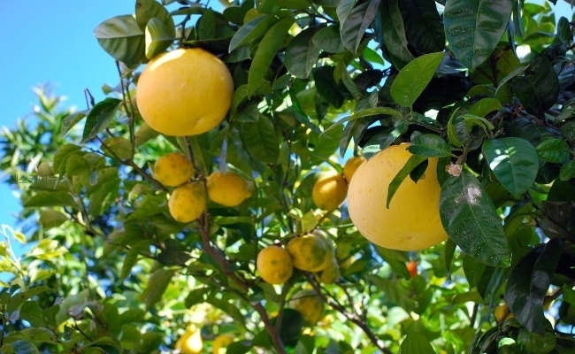

자몽의 효능
달고 쌉싸래한 자몽은 감귤속에 속하는 열매로 서인도제도 자메이카가 원산지이며 포도와 같이 열매가 붙어 열려 그레이트푸르트라는
이름을 가지고 있다.
어떤 요리와 접목하여도 잘 어울리는 자몽은 보기에도 좋지만 맛과 건강에도 좋은 과일로 슈퍼푸드로 부르는 이들도 적지 않다.

비타민C가 풍부해 반개만 먹어도 하루의 필요한 비타민 C를 섭취할 수 있고 감기예방과 피로회복, 숙취에 좋다.
다이어트 식단에 필수 과일로도 소개되었으며 카페에 없어서는 안 될 재료로 음료수로도 높은 인기를 누리고 있다.
특히 요즘 같은 추운 겨울에는 감기 예방을 위해 더욱 인기가 치솟고 있는 과일 중 하나이다.
자몽의 영양성분을 보면 칼로리는 100g당 30kcal로 낮은 편이다. 또한 100g당 단백질 0.5g, 당질 7.5g,
지질 0.2g, 식이섬유 1.14g, 엽산 14.2㎍, 인 17mg, 칼륨 142mg, 칼슘 30mg 등이 들어 있고 비타민A, B, C, E도 풍부하게 들어 있다.
오늘은 요즘 같은 겨울에 더 좋은 자몽의 효능과 부작용에 대해 알아본다.